행사 두 시간 반 전의 행사장. 저 화면에 나가는 모든 것이 우리 콘솔을 거칩니다
01 — 이 행사의 무게
리허설은 있어도, 두 번째 기회는 없습니다
동문회 행사는 회사 행사와 다릅니다. 참석자들이 월급을 받고 앉아 있는 자리가 아니라, 저녁 시간을 내서 모교의 이름 아래 모인 사람들입니다. 20대 신입 동문부터 원로 동문까지 세대가 한 공간에 섞이고, 그 앞에서 조직은 "다음 100년"을 선언합니다.
이런 자리의 영상과 중계는 한 번에 끝나야 합니다. 개막 60초의 오프닝이 밀리면 식순 전체가 밀리고, 중계가 끊기면 그 순간은 다시 오지 않습니다. 우리가 이 행사에서 맡은 것은 영상 세 편이 아니라, 그날 저녁의 화면 전부였습니다.
02 — 큐시트에서 시작한 설계
'비전'이라는 말이 여섯 번 나오는 큐시트
행사 큐시트를 받아 보면, 오프닝 영상·회장 인사말·비전 영상·발표 PT·센테니얼 영상·선언문까지 '비전'이 여섯 번 등장합니다. 각 순서가 같은 말을 반복하면 관객은 세 번째부터 듣지 않습니다.
- 19:20오프닝 영상 「THE NEXT 100」
- 19:34회장 인사말 · 축사 — IMAG 중계
- 19:44비전 영상 「VISION 2030 Plus」
- 19:47비전 · 센테니얼 · 발전재단 발표 P/T
- 19:54센테니얼 영상 「FROM THE FUTURE」
- 20:35선언문 낭독
그래서 영상 세 편에 각각 다른 질문 하나씩만 맡겼습니다.
- 오프닝 (60초) — 무엇을 느끼게 할 것인가. 설명 없이 감정과 기대감만.
- 비전 영상 (2분 15초) — 무엇을 할 것인가. 17개 분과가 3년간 할 일.
- 센테니얼 영상 (3분 12초) — 왜 지금인가. 2116년에서 오늘로 되감는 이유.
말하는 순서가 다르니 길이도 달라집니다. 감정을 만드는 편이 가장 짧고, 이유를 설명하는 편이 가장 깁니다.
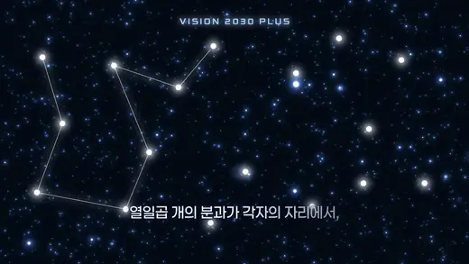
비전 영상 중 — 17개 분과가 하나의 선으로 모입니다
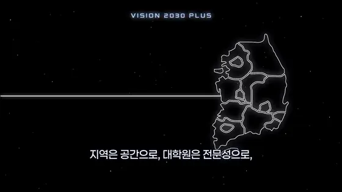
같은 선이 국내에서 해외 거점으로 뻗습니다
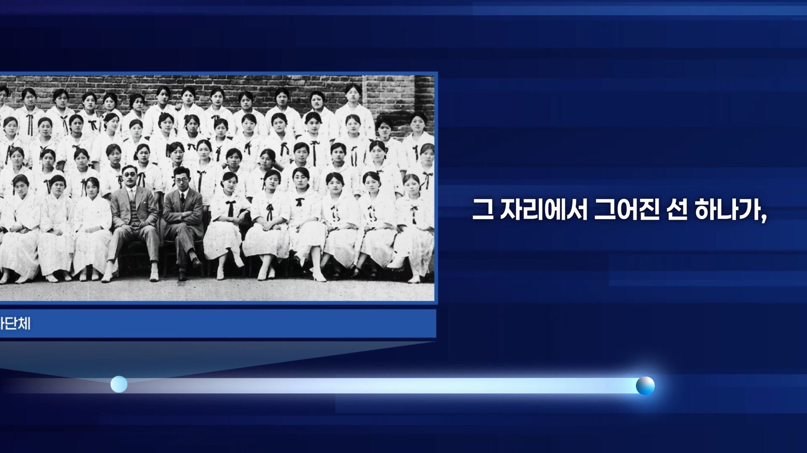
1955년 제1회 석사학위수여식 기록사진
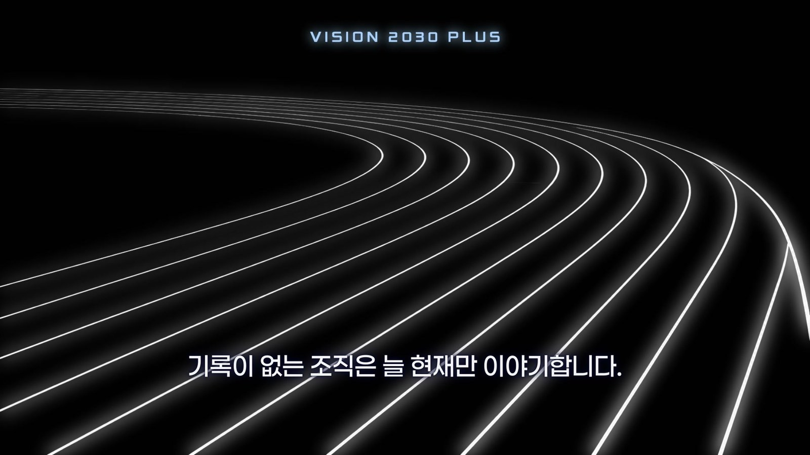
같은 선이 트랙 레인으로
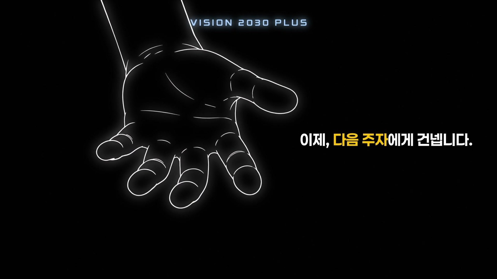
비전 영상의 마지막 컷
03 — 현장이 던진 문제 둘
무대 화면이 보통 화면의 세 배 넓이였습니다
행사장 정면 LED는 24:7 — 일반 영상(16:9)의 세 배 가까이 넓은 화면입니다. 16:9 영상을 그냥 올리면 양옆이 비거나 사람 얼굴이 잘립니다.
그래서 오프닝과 발표 배경은 LED의 실제 해상도 3840×1120에 맞춰 따로 만들었습니다. 소재도 처음부터 다르게 골랐습니다. 연못의 반영, 캠퍼스 파노라마, 운동장 조감 — 옆으로 넓게 펼쳐지는 장면들입니다. 넓은 화면은 약점이 아니라, 그 화면에서만 나오는 그림이 있습니다.

오프닝 중 — 3840×1120, 화면비 24:7

옆으로 넓게 펼쳐지는 소재만 골랐습니다
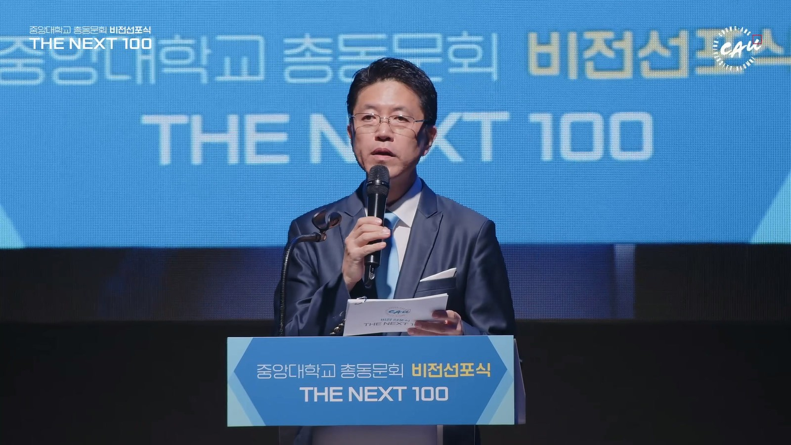
행사 중 — 정면 LED에 걸린 타이틀
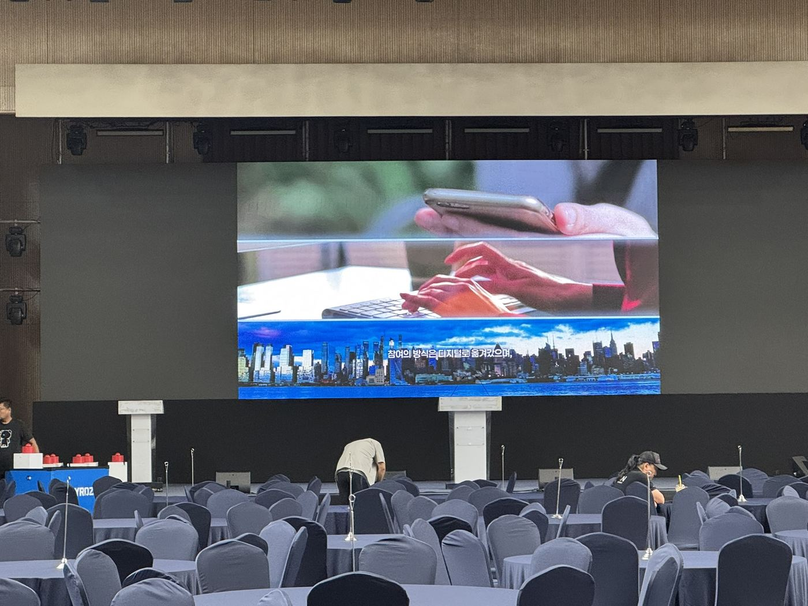
사전 시사 — 16:9 영상은 LED 가운데로
오프닝에 주어진 시간은 60초였습니다
큐시트가 오프닝에 배정한 슬롯은 1분. 그 안에 110년의 역사와 다음 100년을 함께 올려야 합니다. 설명할 시간이 없어서, 흑백 기록사진과 물살이 솟구쳐 타이틀이 되는 장면 — 상징 두 개만 남기고 전부 덜어냈습니다.

오프닝 중 — 흑백 기록사진 카드

물살이 솟구쳐 타이틀이 됩니다

타이틀이 꽂히는 프레임
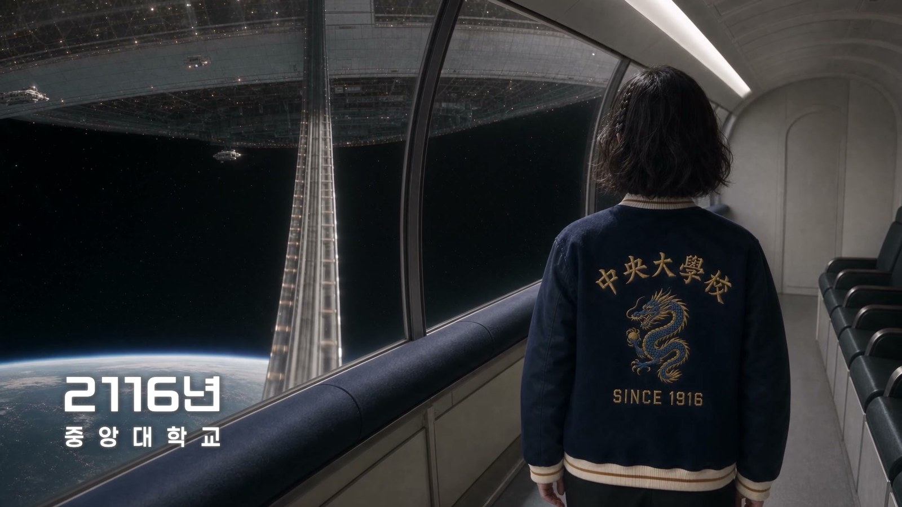
센테니얼 영상 중 — 2116년의 캠퍼스
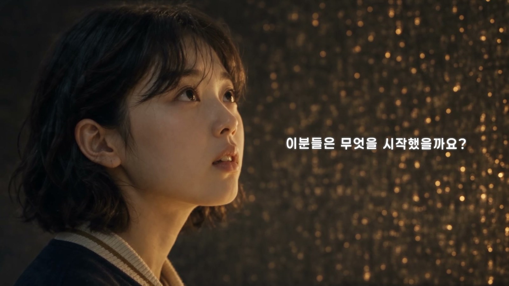
센테니얼 영상 중 — "이분들은 무엇을 시작했을까요?"

센테니얼 영상 중 — 맞잡은 손
3840×1120 · 24:71920×1080 · 16:9LED Full 운용IMAG 송출
04 — 그날 저녁, 콘솔에서
영상을 만든 사람이 큐를 넘기면 달라지는 것
행사 당일, 영상 세 편을 만든 팀이 그대로 중계 콘솔에 앉았습니다. 사전영상 재생, LED 운용, 연단 좌우 스크린의 실시간 송출, 내빈 소개 화면까지 한 콘솔에서 처리했습니다.

타임코드 16:45 — 행사 시작 두 시간 반 전, 카운트다운 리허설 중
영상을 직접 만든 사람은 어느 프레임에서 화면을 넘겨야 하는지 압니다. 오프닝의 마지막 프레임이 몇 초에 꽂히는지, 비전 영상이 끝나고 몇 박자 뒤에 발표 화면으로 넘어가야 하는지 — 큐시트에 적을 수 없는 타이밍이 현장의 품질을 가릅니다. 만든 팀과 넘기는 팀이 같으면, 그 타이밍이 어긋나지 않습니다.
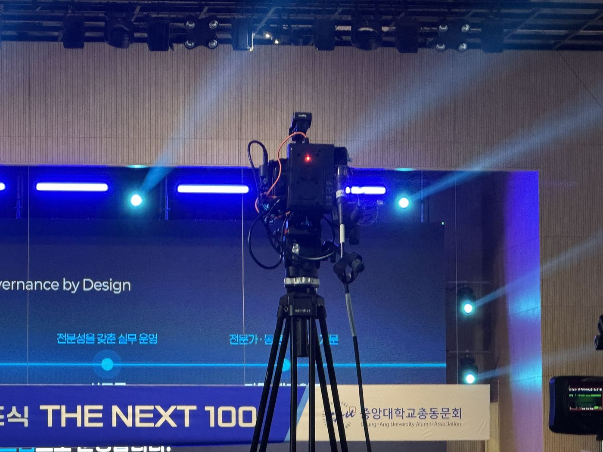
무대 앞 방송 카메라
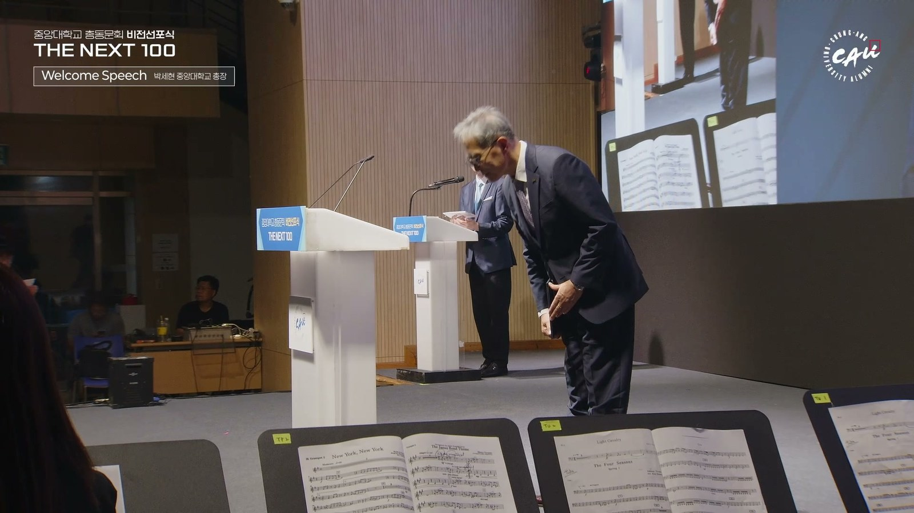
연단과 IMAG 송출
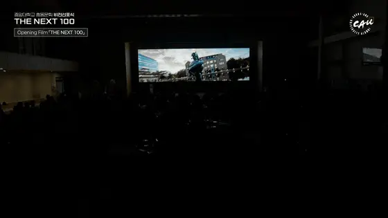
LED에 오프닝이 상영되는 순간
05 — 그날의 끝
행사는 기립박수로 끝났습니다
선언문 낭독을 정점으로 행사가 마무리됐고, 그날의 기록은 3분짜리 애프터무비로 정리해 함께 납품했습니다.

기립박수

축하공연
CREDIT
제작 — 스톤키즈
현장 중계(IMAG · 내빈 Still · Live) · 사전영상 3편 · 현장 VJ(LED 운용) · 현장기록영상